Two dimensional neural fields are visualized by the simulator in three dimensions,
whereby the value (for the potential, kernel or input) at each 2D location becomes the third dimension value, [x,y] ↦ [z].
A dimension is added to the visualization to increase the description of the field.
The field is furthermore colored depending on its z axis location.
Movement
The visualization can be rotated with the mouse and the following actions
can easily be performed by pressing keyboard keys...
|
| |
|
|
|
|
down arrow to
rotate down | |
| 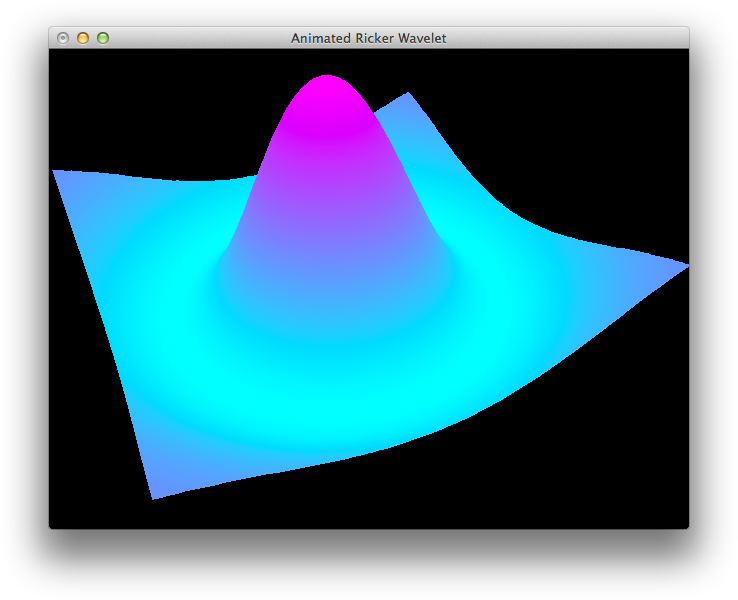 |
|
left arrow to
rotate left | |
| 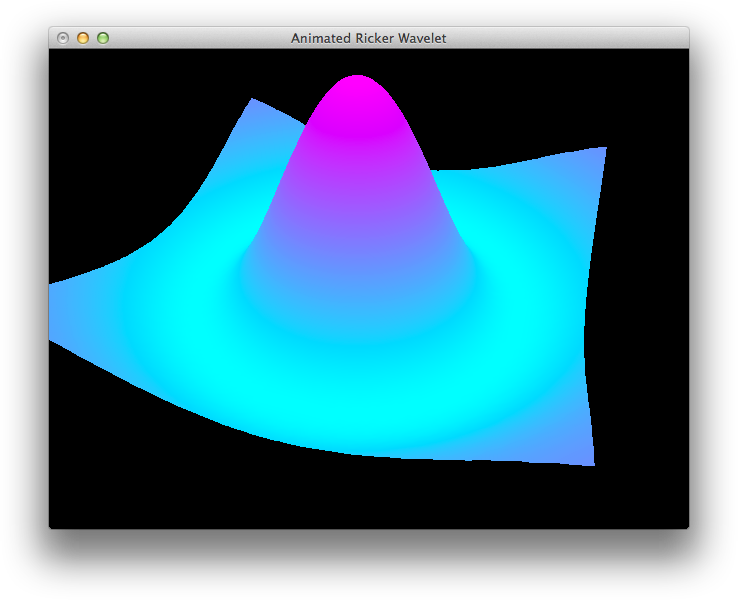 |
|
right arrow to
rotate right | |
| 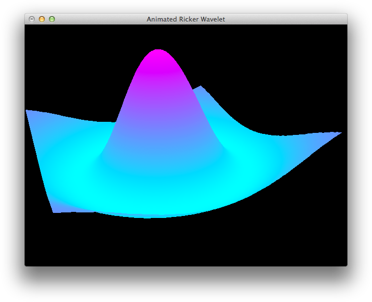 |
|
|
page down key to
zoom out | |
| 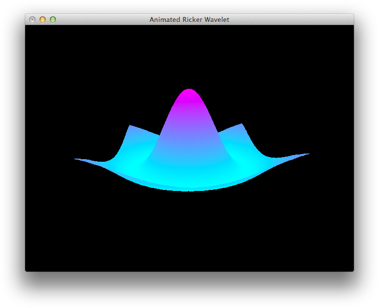 |
|
page up key to
zoom in | |
| 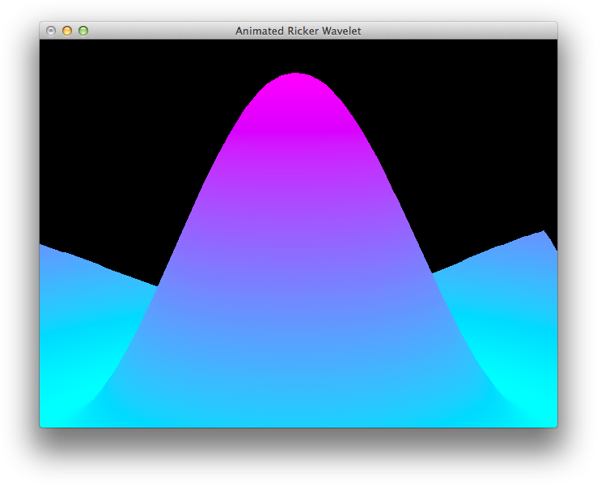 |
|
l to move
colors down | |
| 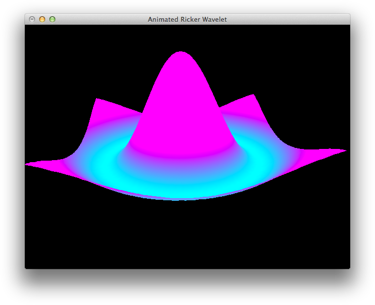 |
|
|
Colors
The visualization offers a selection of 8 colors.
The colors of different sections of the graph can be easily changed to those above by repeatedly pressing the keybord...
b key to change
the background | |
| 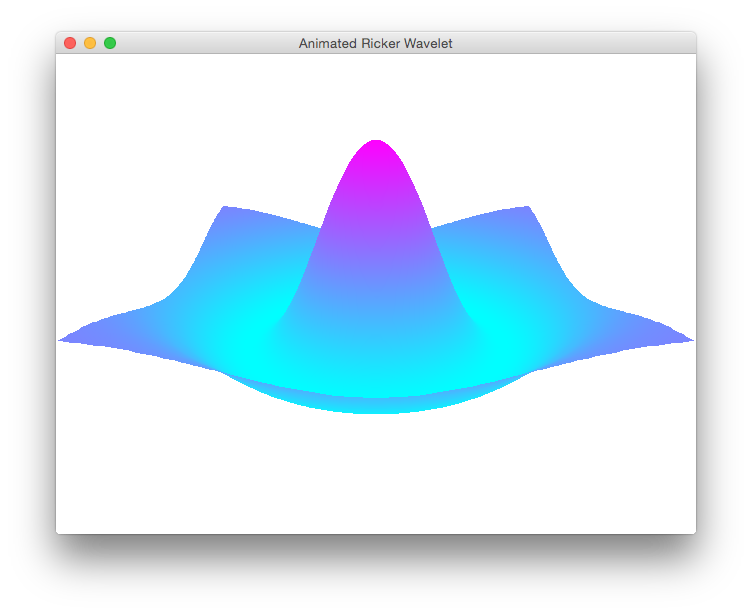 |
|
q key to change
high values | |
| 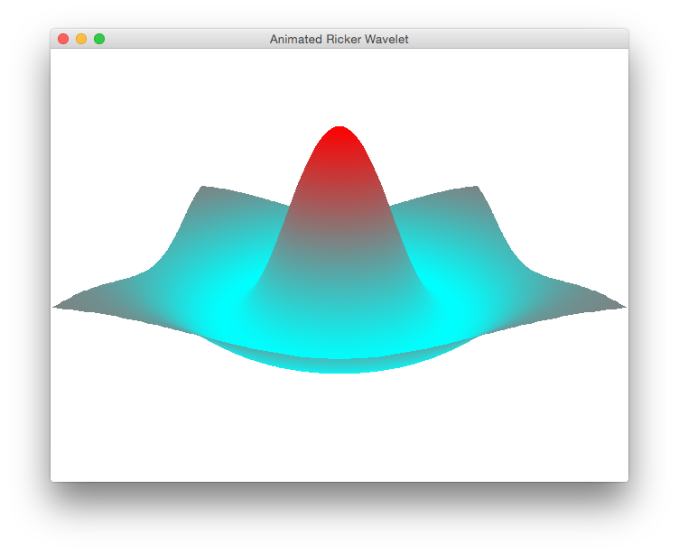 |
|
a key to change
middle values | |
| 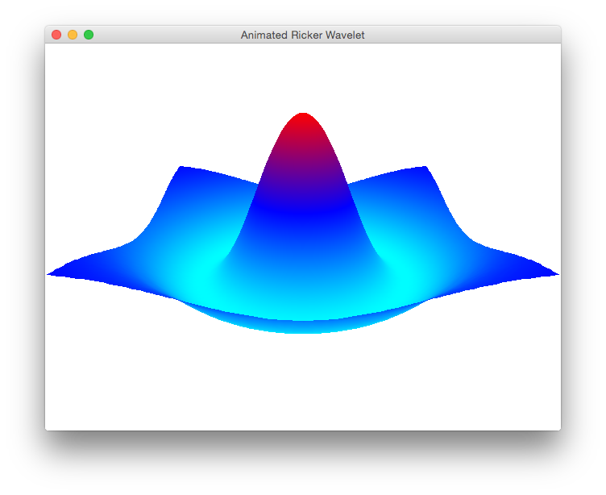 |
|
z key to change
low values | |
| 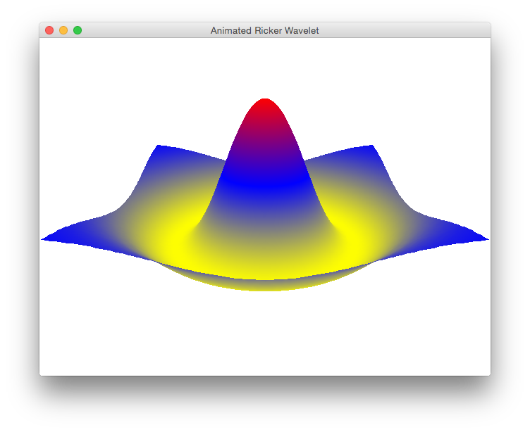 |
|
The simulator interpolates between the high, middle and low range colors.
If you want the graph to interpoate between two colors (high and low), press the 2 key.
If you want the graph to interpolate between three colors (high and mid. mid and low), press
the 3 or a key.
Axes lines
Axes lines are modulated by repeatedly pressing the g keybord key.
Axis text is currently only shown on Mac systems.
It will hopefully be available for other systems soon.
There are 2 text sizes alternated by pressing the t key.
Z axis range
The limits of the Z axis can be changed. To set a new Z axis...
- minimum range:
- ➝ type n
- ➝ followed by the new minimum value
- ➝ and finally the ENTER key.
- ⤶ The minimum axis value can be returned to the minimum field value by pressing the m key.
- maximum range:
- ➝ type y
- ➝ followed by the new maximum value
- ➝ and finally the ENTER key.
- ⤶ The maximum axis value can be returned to the maximum field value by pressing the u key.
The minimum and maximum axis values are returned simultaneously to the minimum and maximum field values with the j key.
Saving
The Python Imaging Library
(PIL) must be installed for the simulator to save images and videos.
Saving videos additionally requires an installation of the FFmpeg library.
These can be installed from source or automatically from a package manager, such as MacPorts, Yum or AptGet.
Without the PIL library, you can take images of the simulation window with your operating system's native screenshot application.
- → save an image (with the PIL library installed)
- - by pressing i on your keyboard.
- 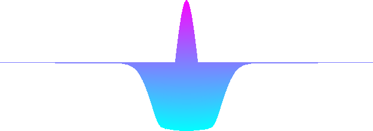
- → save a video (with the PIL and
FFmpeg libraries installed)
- - by pressing v on your keyboard to begin a video recording.
- - Pressing v again stops the recording.
- - After stopping a recording, wait a moment for FFmpeg to compile the video.
- - Note: recording a video slows simulations while images are saved.
- 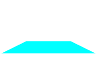
The location of the saved image or video is output to the Terminal.